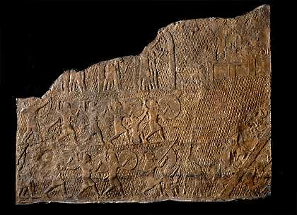

The Challenge -
Assyrian relief

This relief comes from the palace of the Assyrian king Sennacherib at Nineveh. It is part of a series of stone reliefs which decorated the walls of one room and shows the siege and capture of the city of Lachish. This slab shows spearmen and archers of the Assyrian army marching towards the city.
To learn more about the siege of Lachish visit the Warfare Story.
|
|